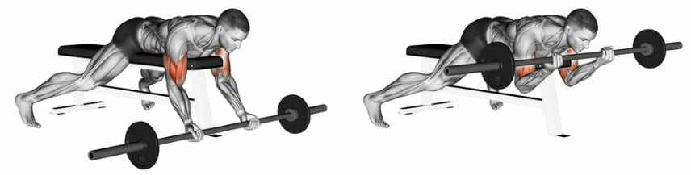

Biceps
Treniranje bicepsa je pomembno zaradi več razlogov. Biceps, ki se nahajajo na sprednji strani nadlakti, so ključna mišična skupina, ki vpliva na funkcionalnost rok in prispeva k izboljšani telesni moči ter estetskemu videzu.
- Trening bicepsa omogoča povečanje mišične moči in izboljšanje funkcionalnosti rok. Močni bicepsi olajšajo vsakodnevne aktivnosti, kot so dvigovanje težjih predmetov, premikanje in izvajanje različnih nalog.
- reniranje bicepsa pomaga oblikovati in okrepiti mišice nadlakti, kar pripomore k privlačnemu in definiranemu videzu. Če je vaš cilj izgradnja mišične mase, je trening bicepsa ključnega pomena za dosego želenega videza.
- VBicepsi so pomemben del mišičnega ravnovesja zgornjega dela telesa. Redna vadba bicepsa v kombinaciji z drugimi vajami za nadlakti pomaga ustvariti uravnoteženo mišično moč v zgornjem delu telesa, kar prispeva k boljši telesni drži in zmanjšuje tveganje za poškodbe.
Pri treningu bicepsa je pomembno upoštevati raznolikost vaj, pravilno tehniko izvajanja in postopno povečevanje obremenitve. Kombinacija različnih vaj, kot so upogib rok s prostimi utežmi, upogib z uporabo kabelske naprave ali uporaba TRX trakov, omogoča ciljno in učinkovito vadbo bicepsa.
Upogib rok s palico (Barbell Bicep Curl)
notranji del bicepsa (m. biceps brachii)
Stojte pokončno s palico držano pred vami, roke pa postavite nekoliko širše od širine ramen. Dlani naj bodo obrnjene navzven. Počasi upognite roke pri komolcih, dvigujte palico proti prsnemu košu. Ostanite osredotočeni na delovanje bicepsa. Počasi spustite palico nazaj v začetni položaj in ponovite.
Upogib rok z ročkami (Dumbbell Bicep Curl)
notranji del bicepsa (m. biceps brachii)
Stojte pokončno z ročkami v rokah, dlani obrnjene proti telesu. Počasi upognite roke pri komolcih, dvigujte ročki proti prsnemu košu. Ohranjajte nadzor nad gibanjem in napetostjo mišic. Počasi spustite ročki nazaj v začetni položaj in ponovite.
Spider Curl
notranji kot tudi zunanji del bicepsa

Nagnite zgornji del telesa proti naprej in se naslonite na nagibno klop ali podporo, tako da so nadlakti na klopi. Z rokami držite ročke ali uteži, dlani obrnjene proti telesu. Počasi upognite roke pri komolcih, dvigujte uteži proti ramenskemu delu. Osredotočite se na napetost v brachialisu in spodnjem delu bicepsa. Počasi spustite uteži nazaj v začetni položaj in ponovite.
Upogib rok z utežmi na naklonjeni klopi(Incline Dumbbell Curls)
zunanji del bicepsa
Nastavite nagibno klop pod kotom približno 45 stopinj. Lezite na klop, držite ročki v rokah ob straneh telesa, dlani obrnjene naprej. Počasi upognite roke pri komolcih, dvigujte ročki proti ramenskemu delu. Osredotočite se na napetost v spodnjem delu bicepsa. Počasi spustite ročki nazaj v začetni položaj in ponovite.
Wide Grip Preacher Curls (Upogib rok z širokim oprijemom na preacher klopi)
zunanji del bicepsa
Sedite na preacher klop in držite široko ročko ali široko palico z obrnjenimi dlanmi (dlani obrnjene naprej). Postavite komolce na blazino in počasi upognite roke pri komolcih, dvigujte uteži proti ramenskemu delu. Osredotočite se na napetost v notranjem delu bicepsa in spodnjem delu bicepsa. Počasi spustite uteži nazaj v začetni položaj in ponovite.
Pri začetku novega vadbenega programa je vedno priporočljivo, da se posvetujete s strokovnjakom ali osebnim trenerjem, ki vam bo pomagal prilagoditi vadbo vašim individualnim potrebam in ciljem!
 Močno Telo
Močno Telo